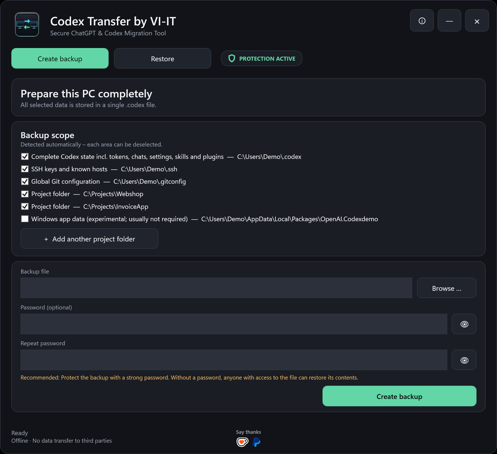
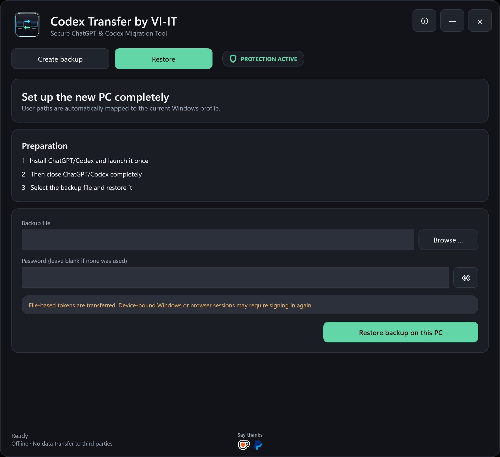
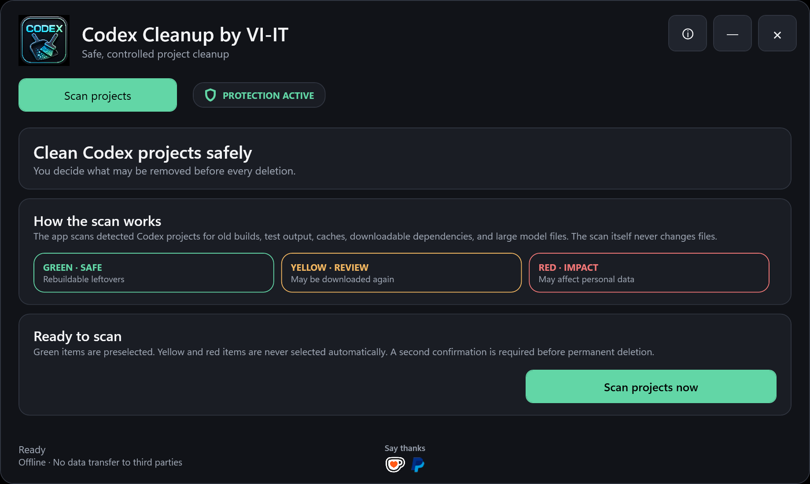
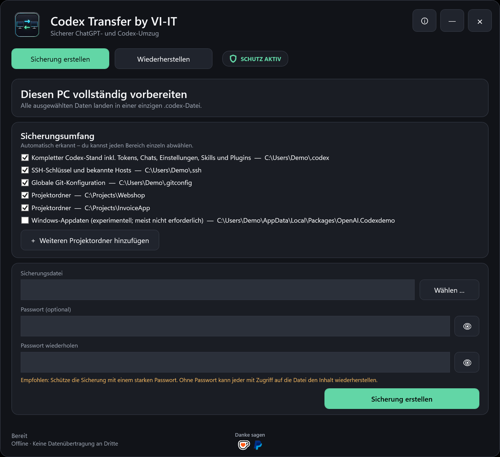

Codex sessions and settings
Include the local Codex home with chats, state databases, configuration, skills and plugins.
Back up local Codex sessions, settings, file-based tokens, skills, plugins, projects, SSH keys and Git configuration into one `.codex` file—then restore them on another Windows computer.
Download free for Windows Deutsche Anleitung
Include the local Codex home with chats, state databases, configuration, skills and plugins.
Transfer selected project folders and optionally SSH keys, known hosts and global Git configuration.
Supported references to the old Windows user profile are mapped to the profile on the new computer.
Backup contents remain local. No analytics, advertising, tracking or VI-IT cloud service is used.
Inspect old builds, tests, caches, dependencies and AI models by size and risk before backup.

Green rebuildable findings are preselected. Yellow and red findings require deliberate selection, and permanent deletion requires a second confirmation.

The scanner is also available separately as Codex Cleanup by VI-IT.
Password-protected archives use AES-256-CBC encryption, HMAC-SHA-256 integrity verification and PBKDF2-SHA-256 key derivation. A password is optional, but a backup without one is not effectively protected.
Device-bound Windows credentials and browser sessions may require signing in again. Cloud ChatGPT conversations, memories, custom GPTs and subscription data remain associated with the ChatGPT account and are not recreated by a local backup.
The portable EXE is currently unsigned. Download only from the official GitHub release, verify the SHA-256 checksum and never publish a `.codex` backup.
Use at your own risk. Review every selected path and keep a current backup. To the extent permitted by law, VI-IT accepts no liability for data loss, downtime, damage or consequential loss.
Codex Transfer by VI-IT sichert den lokalen Codex-Arbeitsplatz mit Sitzungen, Einstellungen, dateibasierten Tokens, Skills, Plugins und ausgewählten Projektordnern. Optional können SSH-Schlüssel und die globale Git-Konfiguration aufgenommen werden. Alle ausgewählten Daten landen in einer einzigen lokalen `.codex`-Datei.

Keine Installation und keine separate .NET-Laufzeit erforderlich.
Deutsch unter deutschem Windows, sonst automatisch Englisch.
Sicherungsinhalte werden nicht an VI-IT oder andere Server übertragen.
Beim Start wird auf GitHub nach einer neueren offiziellen Version gesucht.
Support is voluntary and does not unlock features. Die Unterstützung ist freiwillig und schaltet keine Funktionen frei.